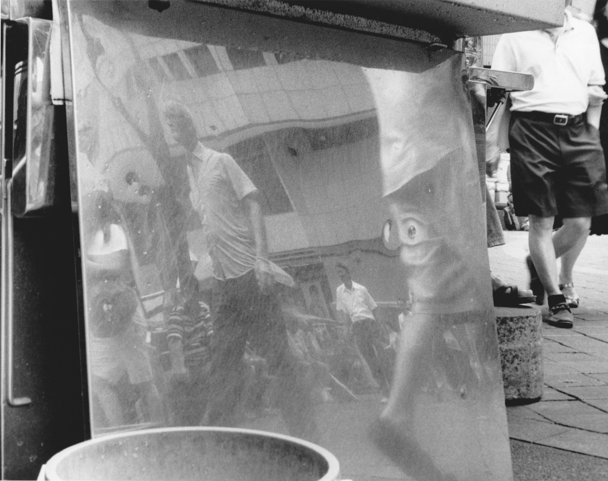
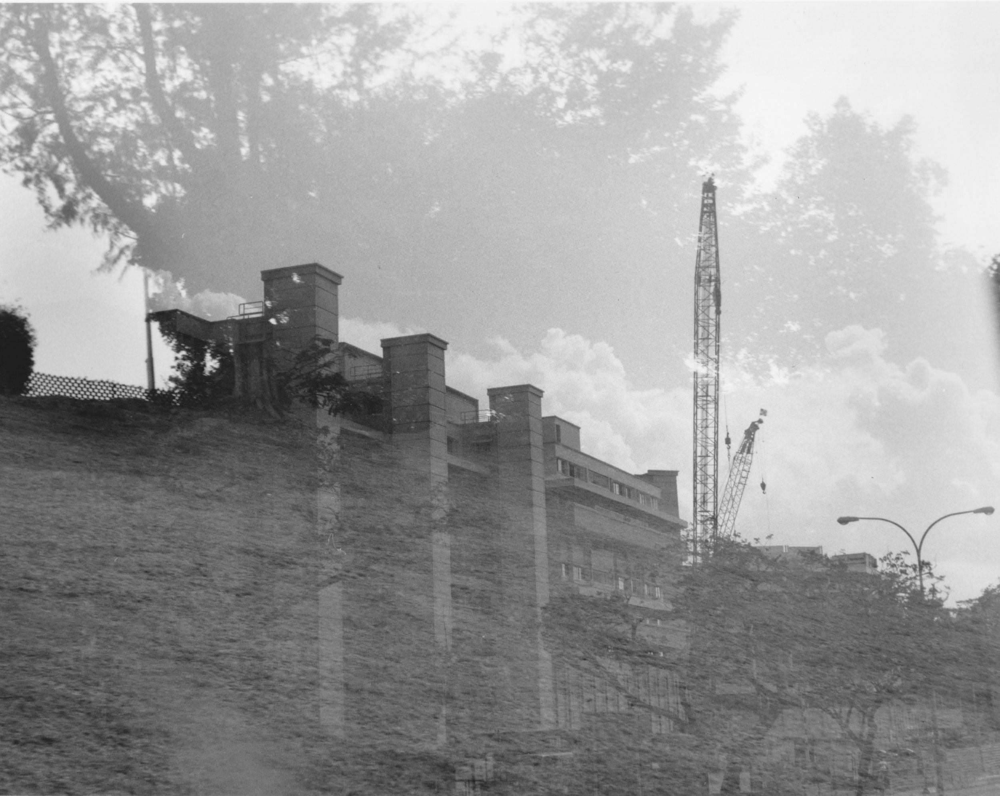
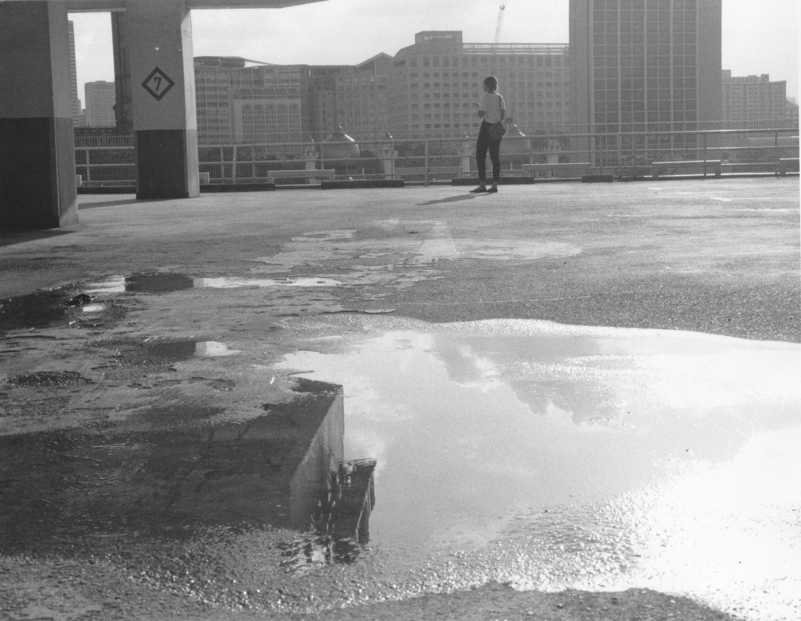
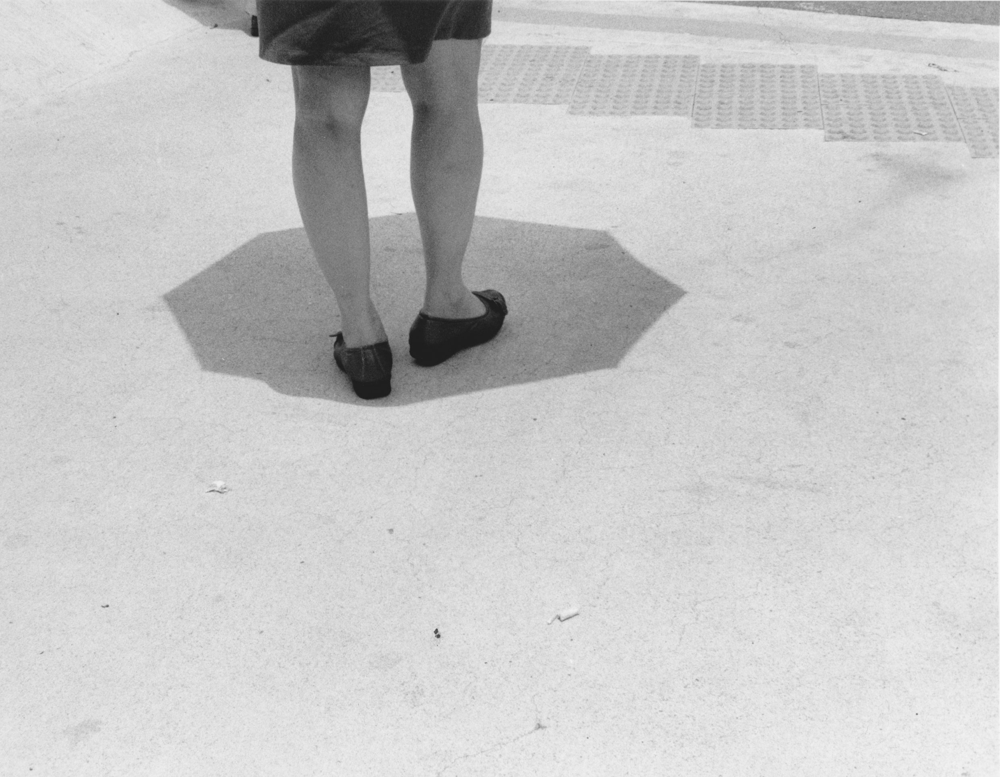
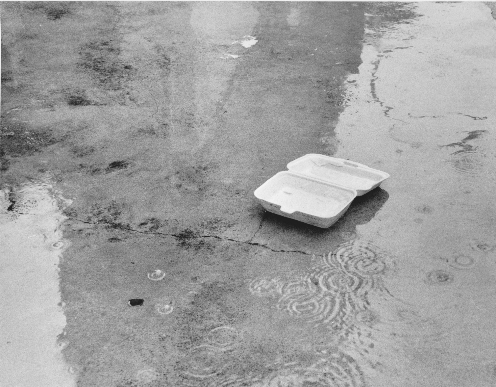

Sometimes temporarily and sometimes without an end, we occupy spaces. In occupying spaces, non-living things too witness life flowing out, beyond their physical being. It is almost as if these spaces are an extension of us. This series of photographs is an attempt at capturing livability and life, and how it can be found around as well as inside us. It details the in-betweens and portrays a certain fullness present in negative spaces. Taken on film and developed in the darkroom, this is a personal project I have taken on.